LE FOYER DU MINEUR
Un peu d’histoire pour nous remettre dans le contexte !
En 1953, les Charbonnages de France construisaient la centrale de Grosbliederstroff. Le statut de mineur de 1946 les obligeait à loger le personnel qui allait être affecté à cette centrale. Il s'agissait donc de loger dans un premier temps 150 personnes. Les urbanistes avaient pensé construire une cité à l'orée du bois entre Lixing-lès-Rouhling et Grosbliederstroff, aux flancs de la vallée de la Sarre.
Lorsque les Houillères présentèrent leur dossier de construction de la cité de Grosbliederstroff, M. PERGUSSON architecte en chef, chargé de la reconstruction, refusa ce choix qu'il ne jugeait pas comme étant idéal. Plusieurs arguments étaient avancés : pas assez d'ensoleillement sur ce flanc de la vallée de la Sarre, trop de nuisances dues à la proximité de la centrale (fumée…). Il proposait un autre site qu'il jugeait beaucoup plus adapté : Rouhling, tout en autorisant la construction de la Sablonnière où devait être logé le personnel qui serait d'astreinte.
M. BELIN, directeur des relations publiques de l’époque, était l'urbaniste chargé de Rouhling et de Behren. Le choix du site de Rouhling posait, nous dit-il, un certain nombre de problèmes, le premier étant l'absence d'infrastructures modernes (alimentation d'eau, traitement des eaux usées, …). Ceci engendrait un coût prohibitif pour l'installation de 150 personnes.
La solution était donc d'intégrer le projet dans un ensemble plus vaste. C'est pourquoi la solution retenue fut de construire une cité plus importante, implantés autour d'une grande aire de verdure : 364 logements dans un premier temps avec une possibilité d'extension qui, en fait, n'a jamais été réalisée pour diverses raisons. Le plan prévoyait également un foyer, un centre commercial, des lieux de culte et des aires de jeux. En 1956, cependant, un immeuble isolé était édifié pour loger le médecin du secteur.
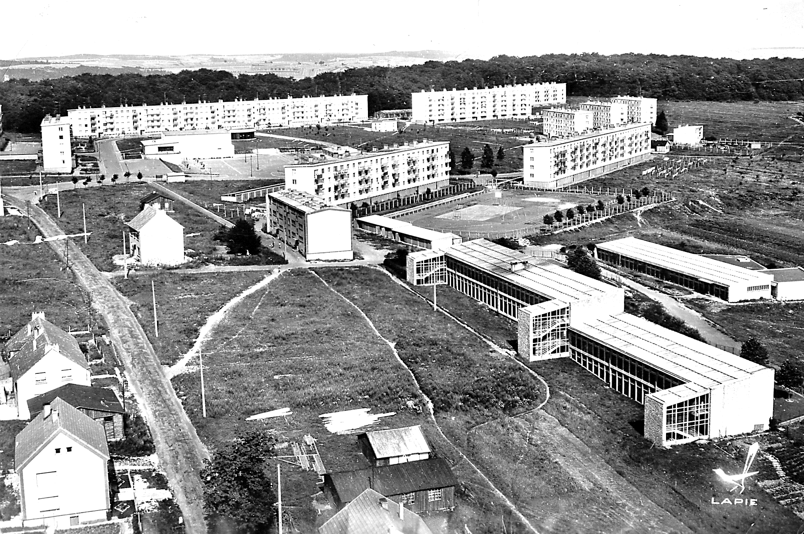
La municipalité de Rouhling de l'époque était très favorable à ce projet et s'était montrée très coopérative. En effet, grâce à cette implantation, la municipalité allait obtenir un château d'eau et une station d'épuration réalisée par les Houillères, ce qui entraînerait une distribution d'eau courante à peu de frais pour le village. Une première tranche de logements était opérationnelle en mars 1955 ; les premiers locataires arrivèrent.
Mais la Cité, c'était aussi la construction d’un « foyer » où se dérouleraient de nombreuses manifestations. L’objectif recherché par la construction du foyer ASBH était le développement d'une vie communautaire, la mise en place d’une animation de la vie sociale et culturelle proprement dite. Les actions devraient porter sur l'ensemble de la commune et ne pas se limiter à la vie du foyer.
Dans un premier temps un « foyer baraque » avait été construit à l’intersection de la rue de Sarreguemines. Puis en automne 1957 le terrassement du nouveau foyer fut entrepris et les travaux évoluèrent progressivement jusqu’à son inauguration en octobre 1960.
Le foyer du mineur était géré par le comité d’entreprise des HBL de 1968 à 1973 et ensuite par l'ASBH (association d'action sociale du bassin houiller) et un comité inter-associations jusqu’en 1989.
Pour obtenir une certaine indépendance, le foyer a été agréé en 1973, « centre social », obtenant ainsi un pluri-financement (comité d'entreprise, municipalité, CAN, CNAF…). Il fallait en réalité appeler le foyer, « centre socio-culturel de Rouhling ».
Il est important de noter que les associations très actives à Rouhling, ont toujours été un facteur d'unité entre le village et la cité. Si à l’époque les relations village-cité n'ont pas toujours été au beau fixe, aujourd'hui la Cité Pasteur fait bien partie intégrante de la commune.
Rappelons que le foyer, pendant près de 30 ans a été un lieu de rencontre intergénérationnel. Ce bâtiment de 2000m² avait de nombreux équipements. Un bar où se retrouvaient les jeunes pour jouer au baby-foot ou mettre de la musique au juke-box, mais aussi un lieu de retrouvaille pour les anciens et les mineurs, qui après leur poste à la mine venaient jouer aux cartes et boire un « canon ».
A côté une salle où se trouvait une télévision, bien sûr en « noir et blanc » et deux billards « français ». Jouxtant la première, une plus grande salle servait pour différentes activités : danse, tennis de table, etc… et mais également pour l’association de gymnastique « La Vaillante » qui formât de nombreux jeunes dont certains ont accédé aux championnats de France.
En ouvrant l’immense séparation en accordéon, nous avions une magnifique salle de bal pour des soirées mémorables de carnaval. Au rez-de-jardin, se trouvait une superbe salle de spectacle avec loges, dans laquelle il y avait des projections cinématographiques et spectacles de théâtre. La scène servait également pour les cours de musique qui ont généré un groupe instrumental.
*Au mois d’octobre 2019, ce bâtiment qui est devenu depuis quelques années une « verrue » au milieu de la Cité Pasteur, va disparaitre pour donner naissance à un complexe moderne, avec appartements et commerces. (Voir projet dans BM130-juillet 2018) *
Quelques souvenirs de ma jeunesse dans le Foyer du mineur
L’hiver 1957-1958, on jouait dans le trou du terrassement du foyer.
Début des années 60 : Dans la salle à côté du bar se trouvaient la télévision, bien sûr en « noir et blanc » et deux billards français.
Entre 1965 et 1968 de nombreux jeunes participaient à différentes activités : ping-pong, billard français, danse folklorique, gymnastique, …
Je faisais partie du club de billard qui était encadré par M. JOSSE Edmond. Je me souviens que dans ces années-là, un champion du monde de billard était venu nous faire des démonstrations. Il avait mis une boule sur une petite table carré, un peu à l’écart du billard et en tirant sur les deux boules qui se trouvaient sur le billard, avait marqué le point. J’avais été très impressionné.
En ouvrant l’immense séparation en accordéon, nous avions une magnifique salle dans laquelle se déroulait le ping-pong dont je faisais partie, avec DOLO Roger comme entraîneur.
Cette grande salle servait également aux différentes activités associatives, mais principalement à l’association de gymnastique « La Vaillante » qui formât de nombreux jeunes, dont certains accédèrent aux championnats de France.
Elle était aussi utilisée pour les traditionnels bals et les soirées carnavalesques, auxquels j’allais dans les années 1968-1969. Cette salle a également accueilli des concours de chants, des diners dansants, des expositions, ainsi que d’autres manifestations.
Dans les années 70, les jeunes, nous nous retrouvions dans la salle du bar pour jouer au baby-foot ou mettre de la musique au juke-box.
En 1967, j’ai fait partie du 1er camp de jeunes avec une bande de copains de la cité qui avait entre 16 et 18 ans. Nous avions comme destination diverses villes d’Auvergne. Ce camp était organisé par M. BAUDRY Jacques, animateur du CE HBL, qui eut beaucoup de mal à encadrer ces jeunes un peu turbulents. Déjà à l’époque, pour diminuer le coût du séjour et du voyage en bus, nous vendions des croissants et lavions des voitures.
Dans la même période, les jeunes avaient à leur disposition le local de l’ancienne laverie, qui abrite aujourd’hui le restaurant « Le Cocon » pour y apprendre la boxe avec M. WUSLER. Ce local quelques temps après est devenu un garage à motos et mobylettes où nous réparions nos « bolides » avec Salva DETTORI, Claude BAUDRY, …
Au début des années 80, j’allais à l’atelier « fer » en dessous des locaux commerciaux, pour apprendre les techniques du fer forgé avec M. SEGURA. Il y avait également un atelier « bois ».
De septembre 1985 à octobre 1989, je fus président du CIA (Comité Inter Associations) qui gérait le foyer et les bâtiments annexes avec l’ASBH. Durant ces années, le comité a organisé de nombreuses manifestations : le carnaval, l’Ecomusée, diverses expositions, … dont quelques fois le bénéfice était reversé à l’ASBH pour la survie de la SARL du bar.
En février 1986, j’ai participé en tant que trésorier de l’APE (Association des Parents d’Elèves) à l’organisation d’un centre de loisirs d’une semaine pour les enfants avec la compagnie clownesque des Patchi.
Toutes ces activités se sont déroulées au rez-de-jardin, où se trouvait une superbe salle de spectacle avec loges, dans laquelle il y avait précédemment des projections cinématographiques et des spectacles de théâtre.
La scène servait également pour les cours de musique qui étaient prodigué par M. Golda avec lequel j’ai appris à jouer de la guitare vers 1965.
Ces cours de musique ont généré la création d’un groupe d’accordéonistes et un groupe instrumental, avec guitares, batterie, synthé, genre « Beatles », très en vogue à l’époque.
Raymond LEHMANN
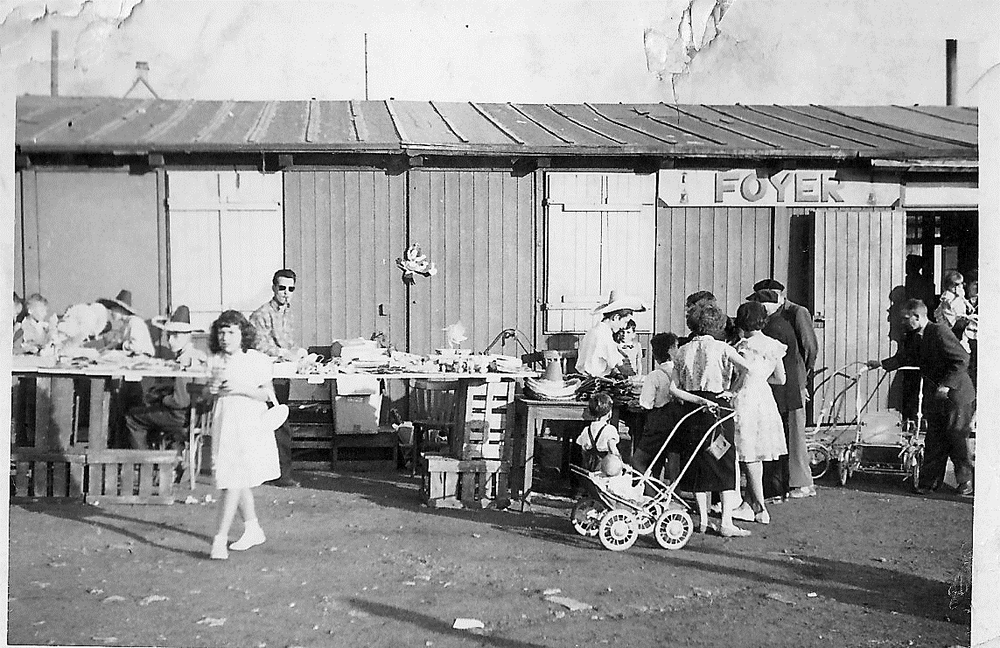
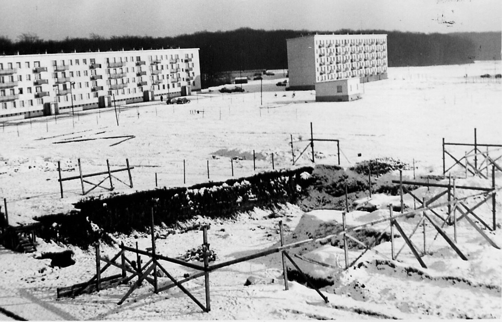

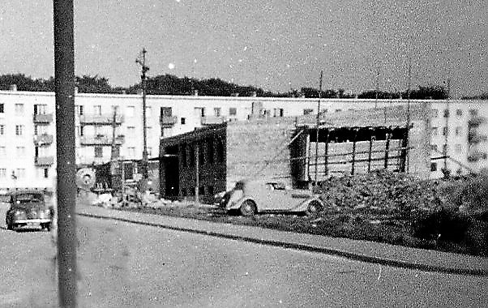
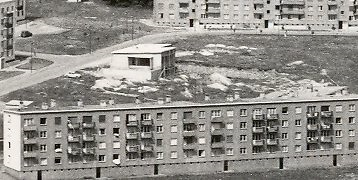
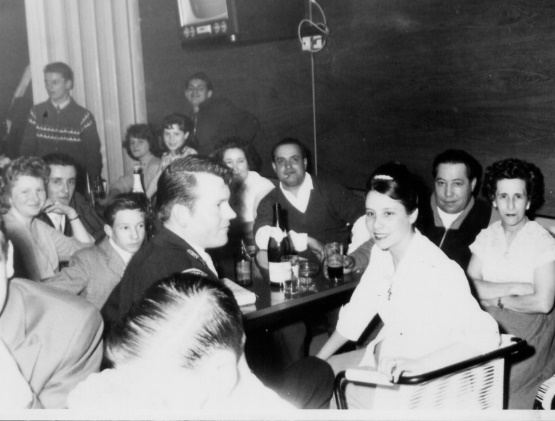
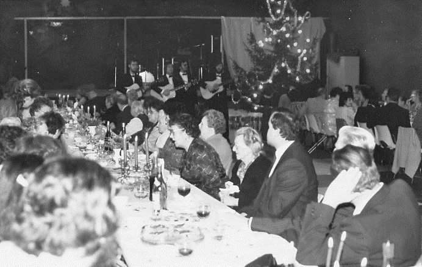
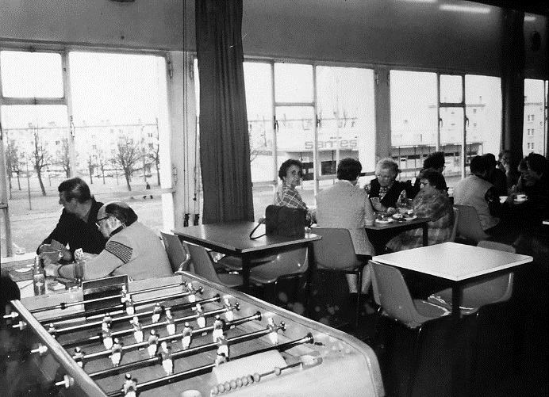
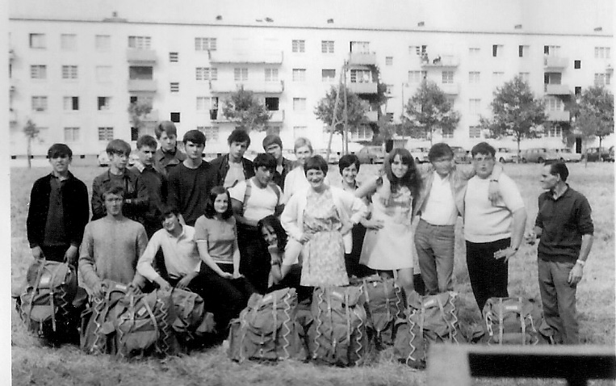
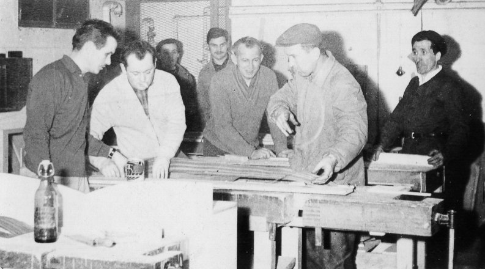
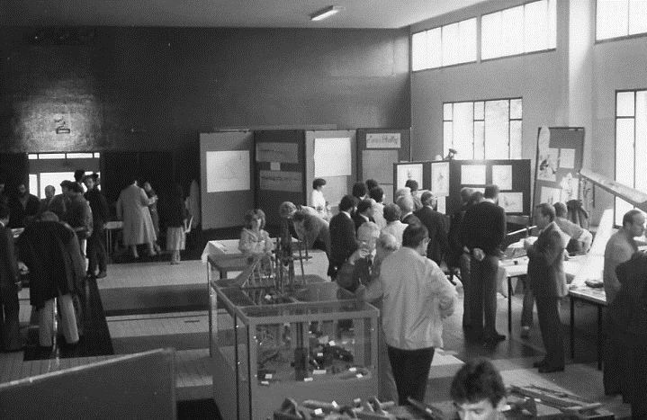
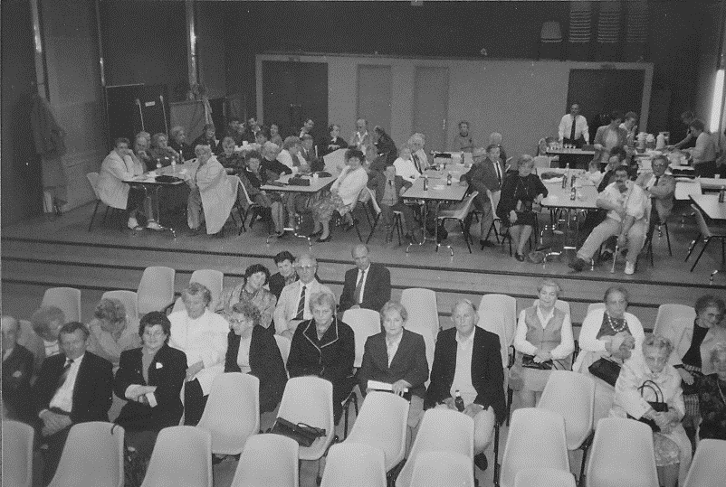